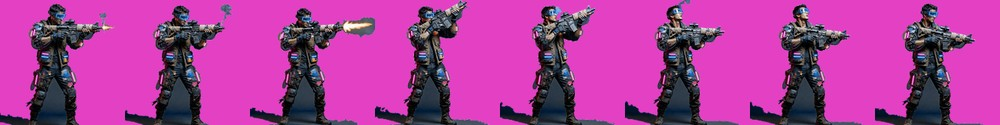
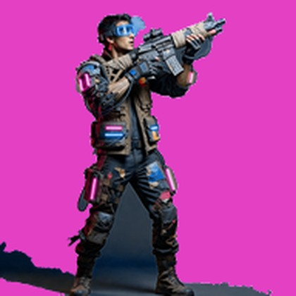
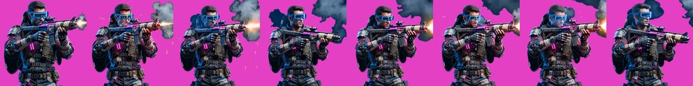
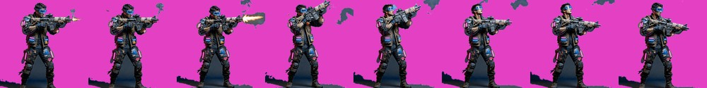

目前結果

8 幀 · 義體傭兵：青藍戰術目鏡、拼湊防彈插板、外露義肢肩膀、纏膠帶的改裝步槍。點放射擊有槍口火光與後座

放大：腳下那塊深色楔形就是待決定的東西
- 幀間差異
- 12.4（射擊是小幅度動作，這個數值合理）
- 脫離主體的殘留
- 5 個 → 0 個
兩次修正

v1 取景錯 — 出來是胸上半身。遊戲裡槍手要跟全身的殭屍並排，半身會讓比例完全對不起來。已把「全身鏡頭、腳絕對不可裁掉」寫死進 zl_style_char.txt，24 支全部繼承

v2 有飄浮殘留 — 8 幀裡有 5 幀出現脫離主體的灰色團塊（煙、地面碎塊），在遊戲裡會是角色旁邊莫名其妙的灰塊
- 殘留的修法沒有再花錢重生：在抽幀工具加了
--largest-only，每一幀只保留最大的連通區塊。判斷依據是「連不連得到主體」而不是「像不像背景」——後者需要語意理解，前者只要幾何就夠。
- 這個旗標之後所有角色／單體素材都會用，等於一次修好 24 支加後面的 Boss 與駐守物。
要你決定：腳下那塊深色地面
接受，還是再花 $0.32 重生一次
待決定
- 那塊楔形是連著靴子的，所以連通區塊清理清不掉它。
- 接受的理由：它讓角色「站在地上」而不是浮空，遊戲尺寸下大約 25px。
- 不接受的理由：形狀不對稱、偏向左側，不太像陰影比較像一塊地板；而且三種殭屍都沒有地面陰影，混在一起會不一致。
- 我傾向再花 $0.32 重生一次並在基底寫死「角色完全懸空、不可有任何地面、接觸陰影或投影」。理由是這是 24 支的共同基底——現在多花 $0.32 把基底調對，勝過 24 支都帶著同一個瑕疵。
花費
- 本試樣 2 支 × $0.32 = $0.64（第一支取景錯報廢）
- 累計美術：$7.04
- 後續 23 支槍手動畫預估 $7.36；Grok 額度正常